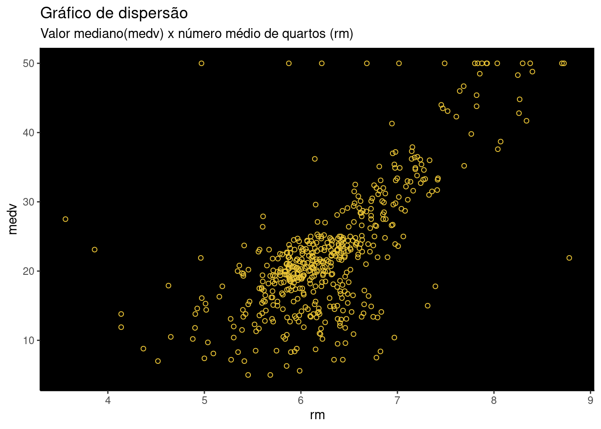
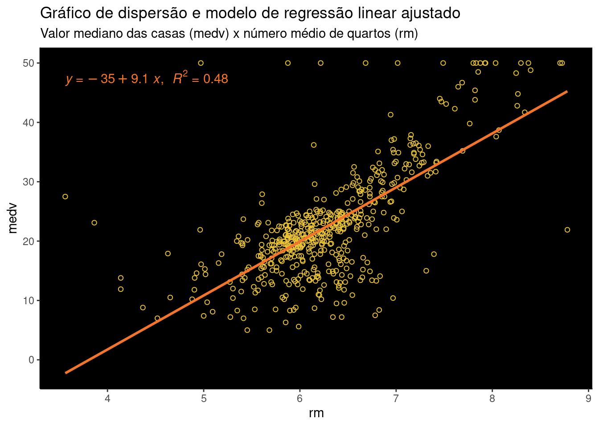
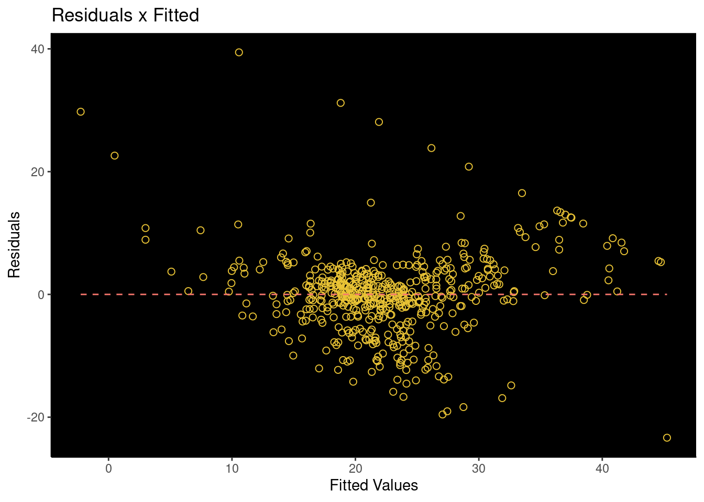
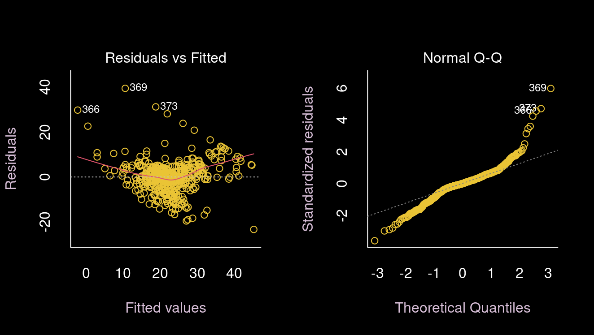
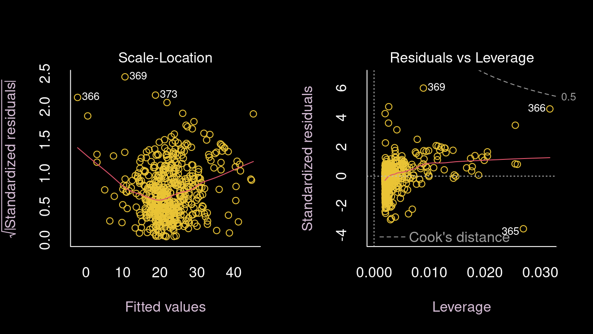

Resolução da lista de exercícios sobre modelagem linear simples e múltipla. Questões de 01 a 10.
Dados
O banco de dados Boston apresenta registros de valores medianos das casas (medv) de 506 bairros de Boston. O objetivo é identificar quais das 13 variáveis explicativas estão associadas com esses valores e usá-las para fazer predições de preços das casas.
Proportion of residential land zoned for lots over 25000.00 sq.ft
indus
Proportion of non-retail business acres per town
chas
Charles River dummy variable (= 1.00 if tract bounds river; 0.00 otherwise)
nox
Nitrogen oxides concentration (parts per 10.00 million)
rm
Average number of rooms per dwelling
age
Proportion of owner-occupied units built prior to 1940.00
dis
Weighted mean of distances to five Boston employment centres
rad
Index of accessibility to radial highwayI
tax
Full-value property-tax rate per $10,000
ptratio
Pupil-teacher ratio by town
black
1000.00 (Bk - 0.63)^2 Where Bk is the proportion of blacks by town
lstat
Lower status of the population (percent)
medv
Median value of owner-occupied homes in $1000s.
Exercício 1
Faça um gráfico de dispersão entre medv e rm.
grafico_exercicio_01 <- MASS::Boston |> dplyr::select(medv, rm) |> ggplot2::ggplot() + ggplot2::aes(x = rm, y = medv) + ggplot2::geom_point(shape =1, color ="#EAC435") + ggplot2::labs(title ="Gráfico de dispersão",subtitle ="Valor mediano(medv) x número médio de quartos (rm)" ) + ggplot2::theme_classic() + ggplot2::theme(panel.background = ggplot2::element_rect(fill ="#000000"))grafico_exercicio_01

Gráfico 01 - gráfico de dispersão dos pares valor mediano das casas e número médio de quartos.
Exercício 2
Ajuste um modelo de regressão linear simples utilizando medv como resposta e rm como explicativa e guarde em objeto chamado mod_simples. Consulte o summary(mod_simples) em seguida.
mod_simples <- stats::lm(medv ~ rm, data = MASS::Boston)summary(mod_simples)
Call:
stats::lm(formula = medv ~ rm, data = MASS::Boston)
Residuals:
Min 1Q Median 3Q Max
-23.346 -2.547 0.090 2.986 39.433
Coefficients:
Estimate Std. Error t value Pr(>|t|)
(Intercept) -34.671 2.650 -13.08 <2e-16 ***
rm 9.102 0.419 21.72 <2e-16 ***
---
Signif. codes: 0 '***' 0.001 '**' 0.01 '*' 0.05 '.' 0.1 ' ' 1
Residual standard error: 6.616 on 504 degrees of freedom
Multiple R-squared: 0.4835, Adjusted R-squared: 0.4825
F-statistic: 471.8 on 1 and 504 DF, p-value: < 2.2e-16
Exercício 3
Para Lantz (2013), A regressão linear simples define a relação entre uma variável dependente e uma única variável preditora independente usando uma linha definida por uma equação da seguinte forma: \(y = \beta_{0} + \beta_{1}x\). (..) O intercept descreve onde a linha cruza o eixo y, enquanto o slope descreve a mudança de y dado um aumento de x. (tradução nossa 1)
Sabendo que medv é o preço mediano das habitações do bairro e o rm é o número médio de quartos por habitação,
Interprete o parâmetro (Intercept).
No exercício 02, ajustamos o modelo de regressão linear considerando medv como variável resposta e rm como variável explicativa. O objetivo era encontrar as estimadores dos mínimos quadrados, ou seja, os parâmetros \(\hat{\beta }_{0}\) e \(\hat{\beta }_{1}\), os quais são os estimadores de \({\beta }_{0}\) e \({\beta }_{1}\), de modo que o modelo linear resultante fosse o mais próximo possível dos n pontos de dados. Foi utilizada a abordagem dos mínimos quadrados, em que um ajuste foi feito minimizando a soma dos erros ao quadrado.
O parâmetro intercept obtido pela função lm do pacote ‘stats’ corresponde ao parâmetro \(\hat{\beta }_{0}\), e pode ser obtido pela seguinte equação de estimação:
e pode ser interpretado como o valor provável do preço mediano das habitações para aquelas com o número médio de quartos igual a zero, i.e., uma habitaçao com x = 0.
Interprete o parâmetro rm.
O parâmetro rm, conhecido por slope, representa o parâmetro \(\hat{\beta }_{1}\) do modelo e pode ser obtido pela equação de estimação:
e representa o aumento esperado do preço mediano das habitações para cada aumento na média de quartos de uma unidade no total de quartos da habitação, ou seja, a cada acréscimo de um quarto o preço mediano da casa aumenta em média US$9102.11.
O número de quartos está associado com o valor da habitação? Por quê?
Sim, o número de quartos está associado com o valor da habitação.
Vamos analisar esta questão, partindo do teste de hipótese: ‘O número médio de quartos por habitação não possui associação com o valor mediano das casas’
Ao analisar os resultados obtidos no exercício 02, observa-se que que o t-value para o parâmetro rm (número médio de quartos por habitação) foi de 21,72, o que torna absurda a hipótese nula, pois este valor afasta-se significativamente da zona provável de valores para a hipótese analisada.
O valor-p, que representa a probabilidade de encontrarmos o valor de 21,72 (t-value) na zona provável de valores para a hipótese de que o número médio de quartos por habitação não possui associação com o valor mediano das casas é muito próximo de zero, menor que os níveis de significância mais usuais (0.01, 0.05, 0.10), portanto podemos refutar a hipótese nula.
Conclui-se, portanto, que o número médio de quartos está associado ao valor mediano das habitações.
Exercício 4
Consulte as saídas das seguintes funções do pacote stats.
coef(mod_simples)
stats::coef(mod_simples)
(Intercept) rm
-34.670621 9.102109
A funçao coef extrai coeficientes de objetos que retornam de funções de modelagem.
A função predict também permite a obtenção das correspondentes estimativas pontuais e intervalar (95% de confiança). Acima tem-se os 30 primeiros valores.
Exercício 5
Usando o data.frame gerado por augment(mod_simples) faça um gráfico de medv versus rm e em seguida desenhe a reta ajustada do mod_simples.
graf_ex05 <- broom::augment(mod_simples) |> dplyr::select(medv, rm) |> ggplot2::ggplot() + ggplot2::aes(y = medv,x = rm ) + ggplot2::geom_point(shape =1, color ="#EAC435") + ggplot2::geom_smooth(method ="lm", se =FALSE, color ="#F3752B") + ggplot2::labs(title ="Gráfico de dispersão e modelo de regressão linear ajustado",subtitle ="Valor mediano das casas (medv) x número médio de quartos (rm)" ) + ggpubr::stat_regline_equation(ggplot2::aes(label =paste(..eq.label.., ..rr.label..,sep ="*plain(\",\")~~" )),color ="#F3752B" ) + ggplot2::theme_classic() + ggplot2::theme(panel.background = ggplot2::element_rect(fill ="#000000"))graf_ex05
`geom_smooth()` using formula 'y ~ x'

Gráfico 02 - Modelo linear ajustado e seu coeficiente de determinação R2.
Exercício 6
Faça um gráfico de resíduos. Coloque os resíduos no eixo Y e os valores ajustados no eixo X.
residuos <- broom::augment(mod_simples) |> dplyr::select(.resid, .fitted) |> ggplot2::ggplot() + ggplot2::aes(x = .fitted, y = .resid) + ggplot2::geom_point(shape =1, size =2, color ="#EAC435") + ggplot2::geom_line(ggplot2::aes(x = .fitted, y =0, color ="red"),linetype =2 ) + ggplot2::labs(title ="Residuals x Fitted",y ="Residuals",x ="Fitted Values" ) + ggplot2::theme_classic() + ggplot2::theme(panel.background = ggplot2::element_rect(fill ="#000000"),legend.position ="none" )residuos

Gráfico 03 - gráfico dos resíduos e valores ajustados.
Exercício 7
Observe os gráficos de plot(mod_simples).
op <-par(bg ="#000000")graphics::par(mfrow =c(1, 2),bty ="l",col ="#FFFFFF")plot(mod_simples,bg =par("bg"),col ="#EAC435",col.axis ="#FFFFFF",col.lab ="thistle", which =c(1,2))

Gráfico 04 - Resíduos x Valores padronizados e QQ-Plot .
op <-par(bg ="#000000")graphics::par(mfrow =c(1, 2),bty ="l",col ="#FFFFFF")plot(mod_simples,bg =par("bg"),col ="#EAC435",col.axis ="#FFFFFF",col.lab ="thistle", which =c(3,5))

Gráfico 05 - Resíduos padronizados x Valores padronizados e Resíduos x alavancagem .
De acordo com Morettin e Singer, Julio da Motta (2022), ‘Uma das ferramentas mais úteis para a avaliação da qualidade do ajuste de modelos de regressão é o gráfico de resíduos em que os resíduos são dispostos no eixo das ordenadas e os correspondentes valores da variável explicativa no eixo das abscissas (..) Os resíduos padronizados são adimensionais e têm variância igual a 1, independentemente da variância dos erros. Além disso, para erros com distribuição normal, cerca de 99% dos resíduos padronizados tem valor entre -3 e +3’.
Apenas pela inspeção visual, responda: existem outliers? Eles são pontos de alavanca?
Sim. Existem outliers.
A existência de outliers e de pontos de alavancagem pode ser analisada por meio do gráfico ‘Residuals vs Leverage’. A partir dele, os dados que extrapolam os valores de -3 e +3 são identificados como outliers como nos casos #369, #366 e #365. Estes números correspondem ao número da linha do dado no dataset.
Pelo gráfico, não existem pontos influentes ou pontos alavanca (high leverage points). Note que pouco vemos as linhas de distância de Cook (linhas tracejadas nos cantos superior direito e inferior esquerdo) e que todos os casos estão dentro das linhas de distância de Cook
Exercício 8
Ajuste um modelo mod_multiplo para medv explicado por rm e crim. Consulte o summary(mod_multiplo) em seguida.
Call:
stats::lm(formula = medv ~ rm + crim, data = MASS::Boston)
Residuals:
Min 1Q Median 3Q Max
-21.608 -2.835 -0.380 2.592 38.839
Coefficients:
Estimate Std. Error t value Pr(>|t|)
(Intercept) -29.24472 2.58809 -11.300 <2e-16 ***
rm 8.39107 0.40485 20.726 <2e-16 ***
crim -0.26491 0.03307 -8.011 8e-15 ***
---
Signif. codes: 0 '***' 0.001 '**' 0.01 '*' 0.05 '.' 0.1 ' ' 1
Residual standard error: 6.237 on 503 degrees of freedom
Multiple R-squared: 0.542, Adjusted R-squared: 0.5401
F-statistic: 297.6 on 2 and 503 DF, p-value: < 2.2e-16
Exercício 9
Conforme o postBommae (2015), de Bommae King, da Biblioteca da Universidade da Virginia, o gráfico ‘Residuals x Fitted’ nos mostra que a existência de uma relação linear entre a variável resposta e a variável explicativa ocorre quando encontramos resíduos igualmente espalhados em torno de uma linha horizontal sem padrões distintos, sendo isto é uma boa indicação de que as variáveis possuem relação linear. (texto original 2)
Qual modelo ficou melhor: mod_simples ou mod_multiplo? Qual critério você utilizou para decidir o melhor?
O critério utilizado na comparação dos modelos será o coeficiente de determinação ajustado. Abaixo, segue a explicação.
Conforme Morettin e Singer, Julio da Motta (2022), ’Uma vez ajustado o modelo, convém avaliar a qualidade do ajuste e um dos indicadores mais utilizados para essa finalidade é o coeficiente de determinação definido como:
(..) Em essência, esse coeficiente mede a porcentagem da variação total dos valores da variável resposta (yi) em relação à sua média (\(\bar{y}\)) explicada pelo modelo de regressão’.
Segundo Pianezzer (2020), ‘pode-se provar que R2 está contido entre 0 e 1. Alguns livros chamam de coeficiente de determinação o termo’ R, tal que \(-1 \le R \le 1\); entretanto, utilizar R2, tal que \(0 \le R^{2} \le 1\) facilita a análise ao evitar operar com números negativos. Dessa forma, podemos afirmar que quanto mais \(R^{2} \to 1\), mais forte é o poder explicativo do modelo linear. Quanto mais \(R^{2} \to 0\), menos podemos confiar no modelo, visto que os dados não se aproximam da reta.’
Como a comparação ocorre entre o modelo linear simples e o modelo linear múltiplo, vamos utilizar o coeficiente de determinação ajustado.
Na tabela abaixo, temos os resultados dos modelos de regressão linear simples e múltiplo.
sjPlot::tab_model(mod_simples, mod_multiplo)
medv
medv
Predictors
Estimates
CI
p
Estimates
CI
p
(Intercept)
-34.67
-39.88 – -29.46
<0.001
-29.24
-34.33 – -24.16
<0.001
rm
9.10
8.28 – 9.93
<0.001
8.39
7.60 – 9.19
<0.001
crim
-0.26
-0.33 – -0.20
<0.001
Observations
506
506
R2 / R2 adjusted
0.484 / 0.483
0.542 / 0.540
De acordo com Larson e Farber (1941), o quadrado do coeficiente de correlação é chamado de coeficiente de determinação. Pode-se mostrar que o coeficiente de determinação é igual a razão entre a variação explicada e a variação total
O modelo mod_multiplo ficou melhor, pois possui maior coeficiente de determinação ajustado \(R^{2}_{ajustado}\) = 0.540, melhor que o obtido pelo modelo simples, cujo coeficiente de determinação foi de 0.483.
Isto significa que no modelo múltiplo 54% da variação de y (valor mediano da casa) pode ser explicado pela relação entre x (número médio de quartos) e y. Os demais 46% da variação não são explicados pelo modelo devido a outros fatores ou erros amostrais.
Exercício 10
Ajuste um modelo mod_completo para medv explicado por todas as demais colunas. DICA: na fórmula medv ~ ., o ponto significa “todas as variáveis, tirando medv”.
Consulte o summary(mod_completo) em seguida.
mod_completo <- stats::lm(medv ~ ., data = MASS::Boston)summary(mod_completo)
Com base no coeficiente de determinação ajustado, pode-se concluir que o modelo de regressão linear completo é o melhor modelo, pois possui o melhor \(R^{2}\) = 0.734.
Alternativamente, podemos avaliar os modelos segundo as métricas AIC (Akaike Information Criterion), cuja ideia básica é penalizar a inclusão de variáveis adicionais a um modelo e BIC (Bayesian Information Criterion), que é uma variante de AIC com penalidades mais fortes por incluir variáveis adicionais. Quanto menor estas métricas, melhor é o modelo.
A função glance do pacote broom nos fornece de forma consolidada os critérios.
broom::glance(mod_simples)
# A tibble: 1 × 12
r.squared adj.r.squa…¹ sigma stati…² p.value df logLik AIC BIC devia…³
<dbl> <dbl> <dbl> <dbl> <dbl> <dbl> <dbl> <dbl> <dbl> <dbl>
1 0.484 0.483 6.62 472. 2.49e-74 1 -1673. 3352. 3365. 22062.
# … with 2 more variables: df.residual <int>, nobs <int>, and abbreviated
# variable names ¹adj.r.squared, ²statistic, ³deviance
# ℹ Use `colnames()` to see all variable names
broom::glance(mod_multiplo)
# A tibble: 1 × 12
r.squared adj.r.squa…¹ sigma stati…² p.value df logLik AIC BIC devia…³
<dbl> <dbl> <dbl> <dbl> <dbl> <dbl> <dbl> <dbl> <dbl> <dbl>
1 0.542 0.540 6.24 298. 5.22e-86 2 -1643. 3293. 3310. 19566.
# … with 2 more variables: df.residual <int>, nobs <int>, and abbreviated
# variable names ¹adj.r.squared, ²statistic, ³deviance
# ℹ Use `colnames()` to see all variable names
broom::glance(mod_completo)
# A tibble: 1 × 12
r.squared adj.r.squ…¹ sigma stati…² p.value df logLik AIC BIC devia…³
<dbl> <dbl> <dbl> <dbl> <dbl> <dbl> <dbl> <dbl> <dbl> <dbl>
1 0.741 0.734 4.75 108. 6.72e-135 13 -1499. 3028. 3091. 11079.
# … with 2 more variables: df.residual <int>, nobs <int>, and abbreviated
# variable names ¹adj.r.squared, ²statistic, ³deviance
# ℹ Use `colnames()` to see all variable names
Segundo as métricas AIC = 3028 e BIC = 3091, também se pode concluir que o modelo de regressão completo possui o melhor resultado.
O valor estimado para o termo rm variou entre os três modelos? Por qual razão você acha que isso aconteceu?
À medida que adicionamos ao modelo outras váriáveis explicativas que possuem significância, acrescentamos mais informação ao modelo. A existência de outros parâmetros estimadores faz com que o valor estimado para o termo rm sofra a variação observada, pois outros parâmetros passaram a exercer influência sobre a variável resposta. A redução do valor de rm de 9.10 (modelos simples), 8.39 (modelo múltiplo) e 3.81 (modelo completo) demonstra a redução na influência desta variável sobre a variável medv em função das demais variáveis.
Entretanto, deve-se evitar o fenômeno de overfitting, que pode ocorrer quando aumenta-se muito o número de variáveis explicativas no modelo e este perde sua capacidade de generalização.
Análises Complementares
Podemos eliminar as variáveis explicativas não influentes e então obtermos o modelo mais simples e ajustado.
dados <- dados <- MASS::Bostondados$indus <-NULLdados$age <-NULLmod_final <-lm(dados$medv ~ ., data = dados)summary(mod_final)
Conclui-se que na regressão linear múltipla o aumento nas variáveis crim (taxa de criminalidade), nox (concentração de óxido de nitrogênio), dis (distância média ponderada dos cinco centros de emprego de Boston), tax (imposto sobre a propriedade), ptratio (relação de alunos / professor) e lstat (menor status da populaçao) implica em redução do valor mediano das habitações.
Por meio dos coeficientes padronizados, entre estas variáveis acima listadas, lstat (menor status da população) com coeficiente (-0.4057349) e dis (distância média ponderada dos cinco centros de emprego) com coeficiente (-0.3417617) são as que exercem as maiores influências negativas sobre o preço mediano das casas.
Em contrapartida, o aumento nas variáveis zn (proporção de terrenos residenciais acima de 25.000 sq.ft), chas (variável dummy, 1 se a área é limitada pelo rio e 0 caso contrário), rm (número médio de quartos por habitação), rad (índice de acessibilidade à radial highway) e black (1000(bk-0,63)2), onde bk é igual à oporção da população negra) resulta em maiores valores medianos das casas.
Por meio dos coeficientes padronizados, as variáveis rad (índice de acessibilidade à radial highway) com coeficiente (0.2836511) e rm (número médio de quartos) com coeficiente (0.2904234) exercem as maiores influências positivas sobre o preço mediano das casas.
Referências
Bommae, King. 2015. «Understanding Diagnostic Plots for Linear Regression Analysis | University of Virginia Library Research Data Services + Sciences». https://data.library.virginia.edu/diagnostic-plots/.
Lantz, Brett. 2013. Machine Learning with R. First. Birmingham, UK.
Larson, Ron, e Betsy Farber. 1941. Estatística Aplicada. Second. São Paulo: Prentice Hall.
Morettin, Pedro Alberto, e Singer, Julio da Motta. 2022. Estatística e Ciência de Dados. First. Rio de Janeiro: LTC - Livros Técnicos e Científicos Editora Ltda.
Simple linear regression defines the relationship between a dependent variable and a single independent predictor variable using a line denoted by an equation in the following form: y = a + bx (..) The intercept describes where the line crosses the y axis, while the slope describes the change in y given an increase of x.↩︎
This plot shows if residuals have non-linear patterns. There could be a non-linear relationship between predictor variables and an outcome variable and the pattern could show up in this plot if the model doesn’t capture the non-linear relationship. If you find equally spread residuals around a horizontal line without distinct patterns, that is a good indication you don’t have non-linear relationships.↩︎